ПРОВЕРОЧНАЯ РАБОТА №1
ВАРИАНТ 1
1. Укажите город, в котором принял крещение князь Владимир.
1) Киев
2) Херсонес
3) Константинополь
4) Новгород
2. Установите соответствие между событиями и годами.
СОБЫТИЯ
1) создание Правды Ярославичей
2) начало княжения Владимира Мономаха в Киеве
3) призвание варягов
ГОДЫ
A) 862 г.
Б) 980 г.
B) 1072 г.
Г) 1113 г.
Запишите буквы, соответствующие выбранным ответам.
3. Прочитайте отрывок из летописи и укажите название народа, трижды пропущенное в тексте.
Сотворил мир Святополк с _____ и взял себе в жёны дочь Тугоркана... В тот же год пришёл Олег с _____ из Тмутаракани и подошёл к Чернигову, Владимир же затворился в городе. Олег же, подступив к городу, пожёг вокруг города и монастыри пожёг. Владимир же сотворил мир с Олегом и пошёл из города на стол отцовский в Переяславль, а Олег вошёл в город отца своего. _____ же стали воевать около Чернигова, а Олег не препятствовал им, ибо сам повелел им воевать.
1) хазары
2) авары
3) половцы
4) печенеги
4. Установите соответствие между событиями и участниками этих событий.
СОБЫТИЯ
1) первое столкновение Руси с Польшей
2) установление уроков и погостов
3) взятие города Итиль
УЧАСТНИКИ
A) Ольга
Б) Владимир Мономах
B) Святослав Игоревич
Г) Владимир Святославич
Запишите буквы, соответствующие выбранным ответам.
5. Укажите памятник древнерусской литературы, автором которого является митрополит Иларион.
1) «Слово о законе и благодати»
2) «Поучение детям»
3) «Житие Бориса и Глеба»
4) «Повесть временных лет»
6. Рассмотрите иллюстрацию и укажите, что из перечисленного изображено на иллюстрации.
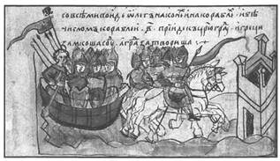
1) фреска
2) мозаика
3) миниатюра
4) икона
7. Расположите исторические события в хронологической последовательности.
A) месть княгини Ольги древлянам, сожжение их столицы Б) Крещение Руси
B) заключение договора князя Игоря с Византией Запишите получившуюся последовательность букв.
8. Укажите реки, по которым проходил торговый путь «из варяг в греки».
1) Волга
2) Дунай
3) Днепр
4) Висла
5) Нева
6) Волхов
Выберите несколько правильных ответов.
9. Перед вами четыре предложения. Два из них являются положениями, которые требуется аргументировать. Другие два содержат факты, которые могут послужить аргументами для этих положений.
1) Княжна Анна была замужем за французским королём Генрихом I.
2) В награду за помощь в подавлении мятежа киевский князь потребовал выдать за него замуж сестру императора Анну.
3) Ярослав Мудрый стремился укрепить внешнеполитическое положение Руси с помощью династических браков.
4) Владимир Святославич пытался укрепить свой авторитет с помощью династического брака.
Подберите для каждого положения соответствующий факт. Номера соответствующих предложений запишите в таблицу.
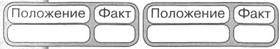
Рассмотрите карту «Русь в IX—X вв.» и выполните задания 10-12.
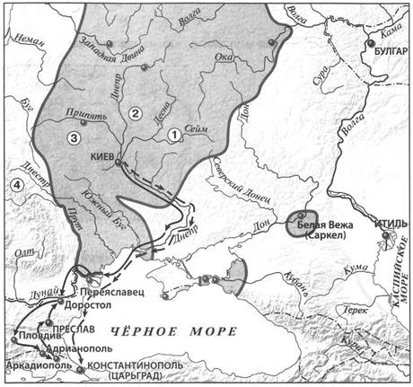
10. Укажите год, когда был совершён поход, обозначенный на схеме пунктирными стрелками —> .
1) 882 г.
2) 907 г.
3) 988 г.
4) 1043 г.
11. Укажите цифру, которой обозначена территория расселения восточнославянского племенного союза, поднявшего восстание в связи с требованием князя Игоря заплатить дополнительную дань.
12. Напишите имя князя, совершившего поход, обозначенный на схеме сплошными чёрными стрелками —> .
Ответ:
13. Впишите пропущенное слово.
____ — разорившийся общинник, попавший в долговую кабалу за ссуду, которую он отрабатывал на поле у человека, ссудившего его деньгами.
14. Прочитайте отрывок из сочинения историка и впишите пропущенное имя князя.
____ избавился от обоих братьев, подославши тайных убийц. Борис был умерщвлён на берегах Альты, близ Переяславля; Глеб — на Днепре, близ Смоленска. Такая же участь постигла и третьего брата — Святослава Древлянского, который, услышав об опасности, бежал в Венгрию, но был настигнут в Карпатских горах и убит.
15. Запишите название, пропущенное в схеме.
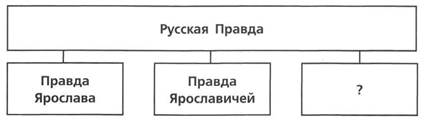
Ответ:
ЗАПОЛНИТЕ ТАБЛИЦУ ОТВЕТОВ
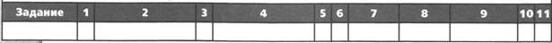
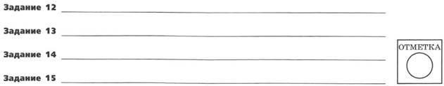
ВАРИАНТ 2
1. Первая часть свода законов Русская Правда была создана в:
1) IX в.
2) X в.
3) XI в.
4) XII в.
2. Установите соответствие между событиями и годами.
СОБЫТИЯ
1) Любечский съезд князей
2) смерть Мстислава Великого
3) применение византийцами греческого огня против русских кораблей
ГОДЫ
A) 911 г.
Б) 941 г.
B) 1097 г.
Г) 1132 г.
Запишите буквы, соответствующие выбранным ответам.
3. Укажите князя, имя которого дважды пропущено в данном отрывке.
После смерти нелюбимого князя, прославившегося алчностью и покровительством ростовщикам, киевляне посылают звать на великокняжеский престол ____, но он, не желая нарушать раз признанные права Святославичей, отказывается от великого княжения. Однако киевляне отправляют к нему новое посольство с тем же предложением, угрожая возмущением в случае его упорства; тогда ____ вынужден был согласиться и принять Киев. Так воля граждан нарушила права старшинства, передав их в руки достойнейшему, помимо старейшего.
1) Владимир Святой
2) Ярослав Мудрый
3) Изяслав Ярославич
4) Владимир Мономах
4. Установите соответствие между событиями и участниками этих событий.
СОБЫТИЯ
1) битва на р. Альте в 1068 г.
2) объединение Киева и Новгорода под единой княжеской властью, образование Древнерусского государства
3) захват власти в Киеве сразу после смерти Владимира Святославича
УЧАСТНИКИ
A) Олег Вещий
Б) Святополк Окаянный
B) Изяслав Ярославич
Г) Святослав Игоревич
Запишите буквы, соответствующие выбранным ответам.
5. Укажите памятник древнерусской литературы, автором которого является Владимир Мономах.
1) «Житие Бориса и Глеба»
2) «Поучение детям»
3) «Повесть временных лет»
4) «Слово о законе и благодати»
6. Рассмотрите иллюстрацию и укажите, что из перечисленного изображено на иллюстрации.
1) фреска
2) мозаика
3) миниатюра
4) зернь
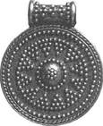
7. Расположите исторические события в хронологической последовательности.
A) первое столкновение Руси с Польшей
Б) гибель князя Изяслава Ярославича
B) разгром Хазарского каганата
Запишите получившуюся последовательность букв.
8. Что из перечисленного относится к деятельности княгини Ольги?
1) введение уроков и погостов
2) Крещение Руси
3) организация походов против половцев
4) принятие христианства
5) основание Новгорода
6) месть древлянам
Выберите несколько правильных ответов.
9. Перед вами четыре предложения. Два из них являются положениями, которые требуется аргументировать. Другие два содержат факты, которые могут послужить аргументами для этих положений.
1) При строительстве Софийского собора в Киеве использовался византийский опыт.
2) Софийский собор в Киеве имел 13 куполов.
3) Софийский собор в Киеве построен из плинфы.
4) Киевский Софийский собор имел черты, которые отличали его от византийских храмов.
Подберите для каждого положения соответствующий факт.
Номера соответствующих предложений запишите в таблицу.
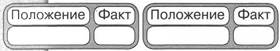
Рассмотрите карту «Русь в IX—X вв.» и выполните задания 10-12.
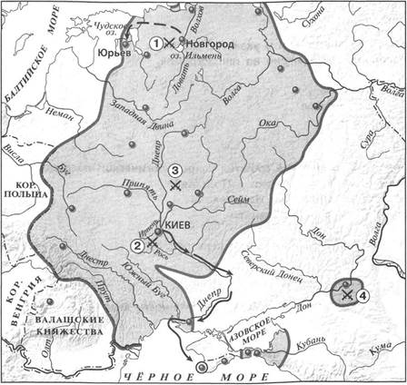
10. Укажите год, когда был совершён поход, обозначенный на схеме пунктирными стрелками —> .
1) 882 г.
2) 907 г.
3) 970 г.
4) 1030 г
11. Укажите цифру, которой обозначено место разгрома печенегов Ярославом Мудрым в 1036 г.
12. Напишите имя князя, совершившего поход, обозначенный на схеме сплошными чёрными стрелками —> .
13. Впишите пропущенное слово.
____ — глава крупной церковной области — части митрополии.
14. Прочитайте отрывок из сочинения историка и впишите пропущенное название.
____ теория включает в себя два общеизвестных пункта:
1) варяги фактически создали на славянских землях государство, что местному населению было не под силу;
2) варяги оказали огромное культурное влияние на восточных славян.
На чём основывается вывод, что «Русь» — это название одного из скандинавских народов, который пришёл вместе с Рюриком и объединил разрозненные земли в государство Русское.
15. Запишите имя, пропущенное в схеме.
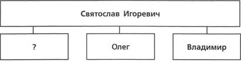
Ответ:
ЗАПОЛНИТЕ ТАБЛИЦУ ОТВЕТОВ
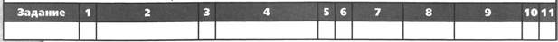
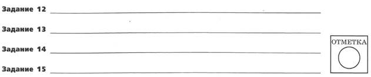
ПРОВЕРОЧНАЯ РАБОТА №2
ВАРИАНТ 1
1. Укажите два результата деятельности Владимира Мономаха во время его княжения в Киеве.
1) ________
2) ________
2. Существует точка зрения, что время правления Ярослава Мудрого является расцветом Древнерусского государства. Приведите не менее двух аргументов, подтверждающих эту точку зрения.
3. Прочитайте отрывок из сочинения историка и выполните задания.
Дружинники жили на княжеском дворе, пировали вместе с князем, участвовали в походах, делили дань и военную добычу. Отношения князя и дружинников были далеки от отношений подданства. Князь советовался с дружиной по всем делам. Игорь, получив от Византии предложение взять дань и отказаться от похода, «созва дружину и нача думати»... Владимир «думал» с дружиной «о строи земленем, и о ратех, и о уставе земленем», т.е. о делах государственных и военных. Князь ____, когда мать Ольга убеждала его принять христианство, отказывался, ссылаясь на то, что над ним будет смеяться дружина.
Впишите имя князя, пропущенное в тексте.
В Какие факты приводит автор для доказательства того, что «князь советовался с дружиной по всем делам»? Укажите два факта.
Назовите два слоя, на которые делилась княжеская дружина в Древнерусском государстве. Укажите одно название воинов, входивших в один (любой) из этих слоёв.
4. Сравните язычество и христианство по линиям, указанным в таблице. На основании сравнения сделайте вывод.
|
Линии сравнения |
Язычество |
Христианство |
|
Влияние на развитие письменности |
||
|
Возможность человеческих жертвоприношений |
||
|
Отношение к убийству |
||
|
Отношение к мести |
Вывод:
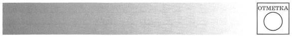
ВАРИАНТ 2
1. Укажите два последствия Любечского съезда князей.
1) ________
2) ________
2. Существует точка зрения, что, несмотря на описываемое в летописи общение князя Владимира с представителями разных религий, его выбор в пользу христианства по византийскому образцу был предопределён предшествующим развитием Древнерусского государства. Приведите два аргумента в подтверждение этой точки зрения.
3. Прочитайте отрывок из сочинения историка и выполните задания.
В источниках содержится немало упоминаний о древнерусской общине. Это была, видимо, уже не родовая община; она обладала определённой территорией (так, согласно Русской Правде, община отвечает за убитого неизвестными человека, найденного на её земле). В ней выделились отдельные экономически самостоятельные семьи: Русская Правда подробно разбирает случаи, когда община помогает попавшему в беду своему члену и когда он должен платить сам, «а людем не надобе». Отметим, что Русская Правда в основном регламентировала отношения, возникающие при столкновении древнерусской общины и княжеского (боярского) хозяйства.
Укажите название общины, о которой идёт речь.
Какие положения Русской Правды использует автор для доказательства своего вывода («это уже не родовая община»)? Приведите два положения.
Укажите любые три категории зависимого населения в Древнерусском государстве, названные в Русской Правде.
4. Сравните отношения Древнерусского государства со странами Европы и с кочевниками и странами Востока. На основании сравнения сделайте вывод.
|
Линии сравнения |
Страны Европы |
Кочевники и страны Востока |
|
Торговые связи |
||
|
Заключение династических браков |
||
|
Военные столкновения |
||
|
Набеги на русские земли, разорение городов и сёл, угон в рабство жителей Руси |
Вывод:
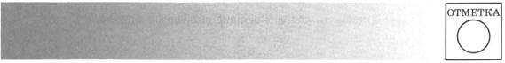